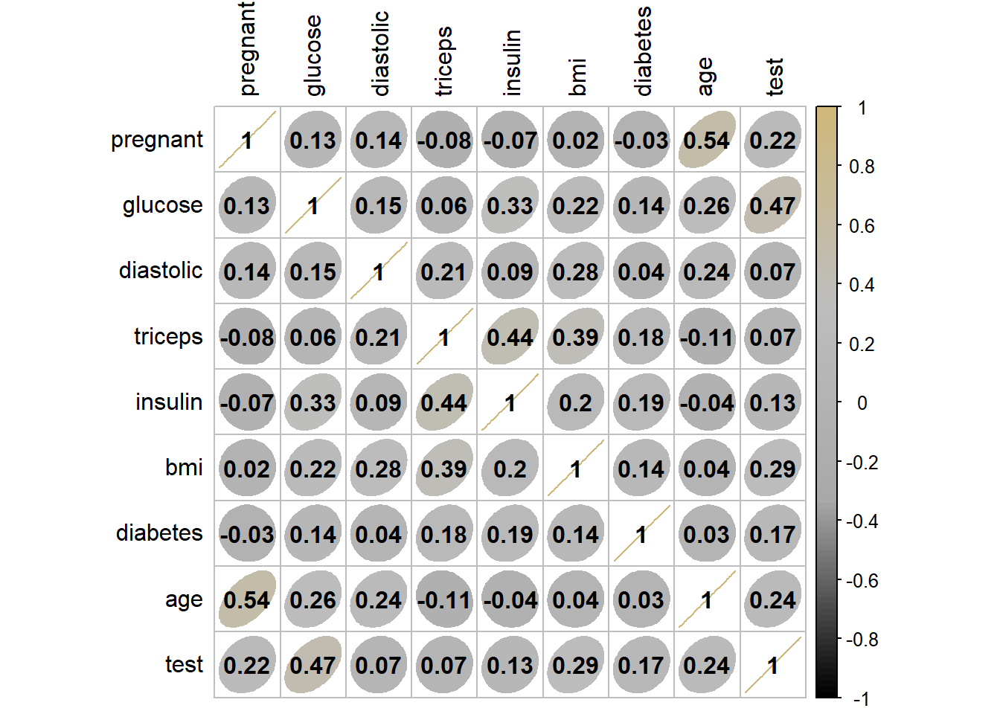
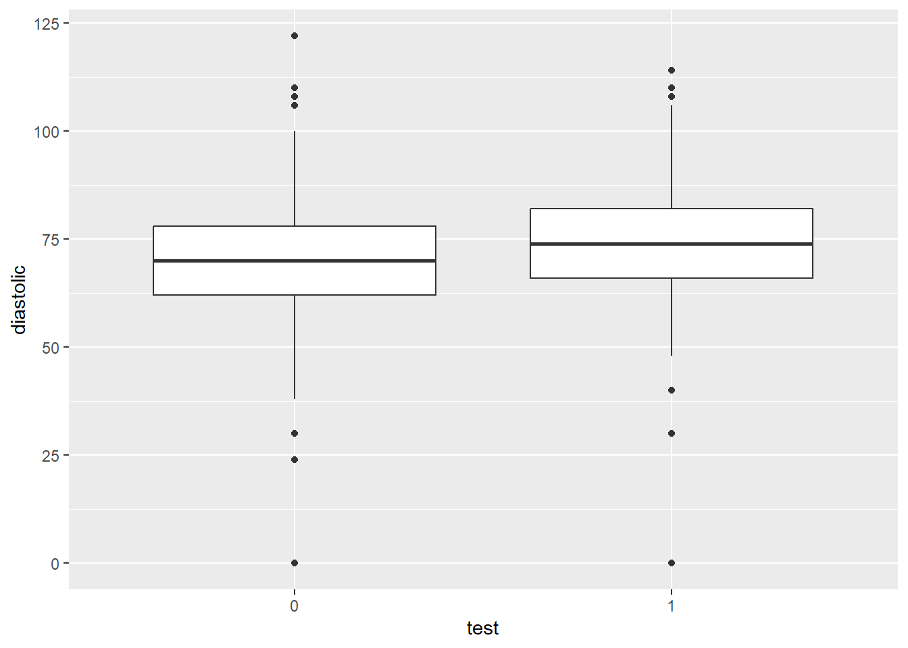
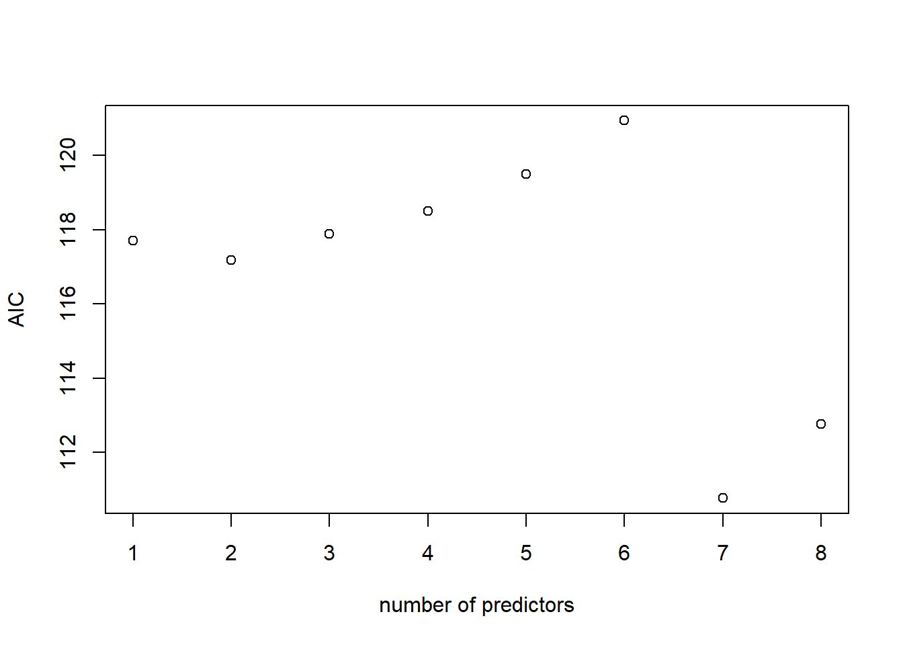
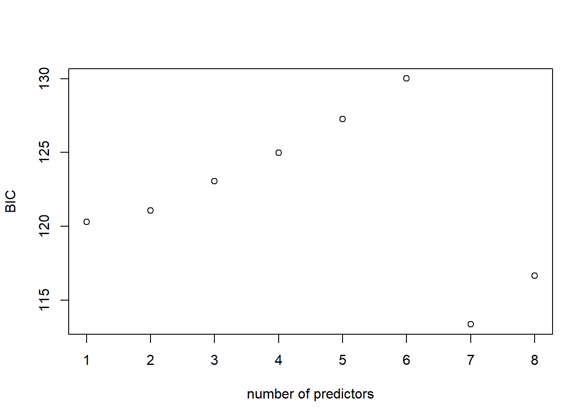
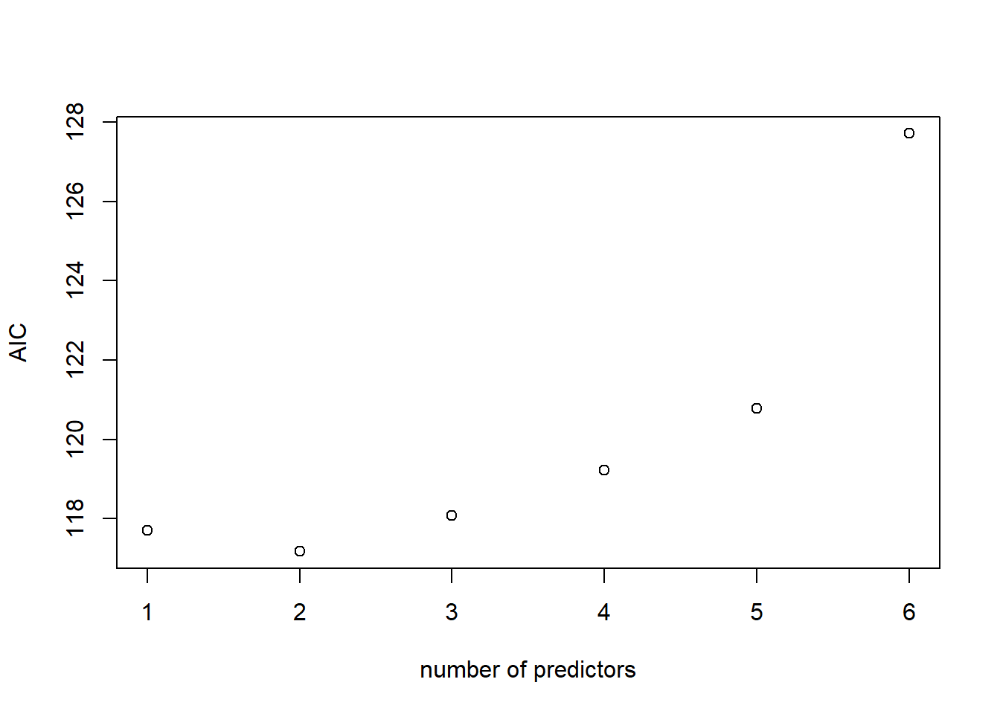
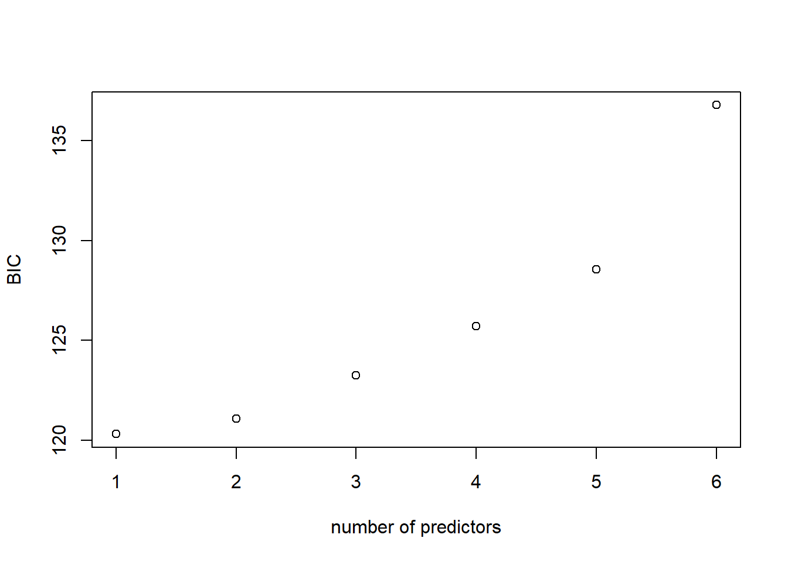

library(ggplot2)
library(dplyr)
pima = read.table("https://raw.githubusercontent.com/CUBuffs/Statistical-Learning-/main/Generalized%20Linear%20Models/Datasets/pima.txt", sep = "\t", header = TRUE)
#Here's a description of the data: https://rdrr.io/cran/faraway/man/pima.html
#pimaSTAT 5010: HW7
Homework #7
See Canvas for HW #7 assignment due date. Complete all of the following problems. Ideally, the theoretical problems should be answered in a Markdown cell directly underneath the question. If you don’t know LaTex/Markdown, you may submit separate handwritten solutions to the theoretical problems. Please do not turn in messy work. Computational problems should be completed in this notebook (using the R kernel is preferred). Computational questions may require code, plots, analysis, interpretation, etc. Working in small groups is allowed, but it is important that you make an effort to master the material and hand in your own work.
A. Theoretical Problems
No theoretical problems this week. Keep working on your project!
B. Computational Problems
Problem B.1
The National Institute of Diabetes and Digestive and Kidney Diseases conducted a study of 768 adult female Pima Indians living near Phoenix, AZ. The purpose of the study was the investigate factors related to diabetes.
Before we analyze these data, we should note that some have raised ethical issues with its collection and popularity in the statistics and data science community. We should think seriously about these concerns. For example, Maya Iskandarani wrote a brief piece on consent and privacy concerns raised by this dataset. After you familarize yourself with the data, we’ll then turn to these ethical concerns.
B.1 (a) [8 points] Perform simple graphical and numerical summaries of the data. Can you find any obvious irregularities in the data? If so, take appropriate steps to correct these problems.
#YOUR CODE HERE
head(pima) pregnant glucose diastolic triceps insulin bmi diabetes age test
1 6 148 72 35 0 33.6 0.627 50 1
2 1 85 66 29 0 26.6 0.351 31 0
3 8 183 64 0 0 23.3 0.672 32 1
4 1 89 66 23 94 28.1 0.167 21 0
5 0 137 40 35 168 43.1 2.288 33 1
6 5 116 74 0 0 25.6 0.201 30 0summary(pima) pregnant glucose diastolic triceps
Min. : 0.000 Min. : 0.0 Min. : 0.00 Min. : 0.00
1st Qu.: 1.000 1st Qu.: 99.0 1st Qu.: 62.00 1st Qu.: 0.00
Median : 3.000 Median :117.0 Median : 72.00 Median :23.00
Mean : 3.845 Mean :120.9 Mean : 69.11 Mean :20.54
3rd Qu.: 6.000 3rd Qu.:140.2 3rd Qu.: 80.00 3rd Qu.:32.00
Max. :17.000 Max. :199.0 Max. :122.00 Max. :99.00
insulin bmi diabetes age
Min. : 0.0 Min. : 0.00 Min. :0.0780 Min. :21.00
1st Qu.: 0.0 1st Qu.:27.30 1st Qu.:0.2437 1st Qu.:24.00
Median : 30.5 Median :32.00 Median :0.3725 Median :29.00
Mean : 79.8 Mean :31.99 Mean :0.4719 Mean :33.24
3rd Qu.:127.2 3rd Qu.:36.60 3rd Qu.:0.6262 3rd Qu.:41.00
Max. :846.0 Max. :67.10 Max. :2.4200 Max. :81.00
test
Min. :0.000
1st Qu.:0.000
Median :0.000
Mean :0.349
3rd Qu.:1.000
Max. :1.000 library(corrplot)
col4 = colorRampPalette(c("black", "darkgrey", "grey","#CFB87C"))
corrplot(cor(pima), method = "ellipse", col = col4(100), addCoef.col = "black", tl.col = "black")
YOUR ANSWER HERE
B.1 (b) [12 points] Fit a model with the result of the diabetes test as the response and all the other variables as predictors. Store this model as glmod_pima. Can you tell whether this model fits the data?
#YOUR CODE HERE
glmod_pima <- glm(test ~ ., data = pima, family = binomial)
summary(glmod_pima)
Call:
glm(formula = test ~ ., family = binomial, data = pima)
Coefficients:
Estimate Std. Error z value Pr(>|z|)
(Intercept) -8.4046964 0.7166359 -11.728 < 2e-16 ***
pregnant 0.1231823 0.0320776 3.840 0.000123 ***
glucose 0.0351637 0.0037087 9.481 < 2e-16 ***
diastolic -0.0132955 0.0052336 -2.540 0.011072 *
triceps 0.0006190 0.0068994 0.090 0.928515
insulin -0.0011917 0.0009012 -1.322 0.186065
bmi 0.0897010 0.0150876 5.945 2.76e-09 ***
diabetes 0.9451797 0.2991475 3.160 0.001580 **
age 0.0148690 0.0093348 1.593 0.111192
---
Signif. codes: 0 '***' 0.001 '**' 0.01 '*' 0.05 '.' 0.1 ' ' 1
(Dispersion parameter for binomial family taken to be 1)
Null deviance: 993.48 on 767 degrees of freedom
Residual deviance: 723.45 on 759 degrees of freedom
AIC: 741.45
Number of Fisher Scoring iterations: 5YOUR ANSWER HERE
B.1 (c) [14 points] Using the model above, write R code to calculate the odds ratio of testing positive for diabetes for a woman with a BMI at the first quartile compared with a woman at the third quartile, assuming all other factors are held constant. Store your answer in a variable x. Also, give a confidence interval for this ratio, stored in a variable ci.
YOUR ANSWER HERE
#YOUR CODE HERE
summary(pima['bmi']) bmi
Min. : 0.00
1st Qu.:27.30
Median :32.00
Mean :31.99
3rd Qu.:36.60
Max. :67.10 #odds ratio
newdata = data.frame(bmi=27.3)
logodds1 = (coef(glmod_pima)[1] + coef(glmod_pima)[7]*newdata)
odds1 = exp(logodds1) #calculuate the odds...
newdata2 = data.frame(bmi=36.6)
logodds2 =(coef(glmod_pima)[1] + coef(glmod_pima)[7]*newdata2)
odds2 = exp(logodds2) #calculuate the odds...
#check interpretation...
(x <- odds2/odds1) bmi
1 2.303015#confidence interval
(ci <- confint(glmod_pima)) 2.5 % 97.5 %
(Intercept) -9.860319374 -7.0481062619
pregnant 0.060918463 0.1868558244
glucose 0.028092756 0.0426500736
diastolic -0.023682464 -0.0031039754
triceps -0.012849460 0.0142115759
insulin -0.002966884 0.0005821426
bmi 0.060849478 0.1200608498
diabetes 0.365370025 1.5386561742
age -0.003503266 0.0331865712YOUR ANSWER HERE
B.1 (d) [10 points] Do women who test positive have higher diastolic blood pressures? Is the diastolic blood pressure significant in the regression model? Explain the distinction between the two questions and discuss why the answers are only apparently contradictory.
#YOUR CODE HERE
pima$test <- as.factor(pima$test)
ggplot(data=pima) + geom_boxplot(mapping = aes(x = test, y = diastolic))
summary(glmod_pima)
Call:
glm(formula = test ~ ., family = binomial, data = pima)
Coefficients:
Estimate Std. Error z value Pr(>|z|)
(Intercept) -8.4046964 0.7166359 -11.728 < 2e-16 ***
pregnant 0.1231823 0.0320776 3.840 0.000123 ***
glucose 0.0351637 0.0037087 9.481 < 2e-16 ***
diastolic -0.0132955 0.0052336 -2.540 0.011072 *
triceps 0.0006190 0.0068994 0.090 0.928515
insulin -0.0011917 0.0009012 -1.322 0.186065
bmi 0.0897010 0.0150876 5.945 2.76e-09 ***
diabetes 0.9451797 0.2991475 3.160 0.001580 **
age 0.0148690 0.0093348 1.593 0.111192
---
Signif. codes: 0 '***' 0.001 '**' 0.01 '*' 0.05 '.' 0.1 ' ' 1
(Dispersion parameter for binomial family taken to be 1)
Null deviance: 993.48 on 767 degrees of freedom
Residual deviance: 723.45 on 759 degrees of freedom
AIC: 741.45
Number of Fisher Scoring iterations: 5YOUR ANSWER HERE
The boxplot shows there’s not much difference between the diastolic blood pressure data whether the tested positive or not. In terms of the model, it appears to be generally not extremely significant but not necessarily insignificant either.
B1 (e) [7 points] Ethical Issues in Data Collection
Read Maya Iskandarani’s piece on consent and privacy concerns raised by this dataset. Summarize those concerns here.
YOUR ANSWER HERE
B.2 Poisson regression
The ships dataset gives the number of damage incidents and aggregate months of service for different types of ships broken down by year of construction and period of operation.
The code below splits the data into a training set (80% of the data) and a test set (the remaining 20%).
library(MASS)
data(ships)
ships = ships[ships$service != 0,]
ships$year = as.factor(ships$year)
ships$period = as.factor(ships$period)
set.seed(11)
n = floor(0.8 * nrow(ships))
index = sample(seq_len(nrow(ships)), size = n)
train = ships[index, ]
test = ships[-index, ]
head(train) type year period service incidents
40 E 75 75 542 1
28 D 65 75 192 0
18 C 60 75 552 1
19 C 65 60 781 0
5 A 70 60 1512 6
32 D 75 75 2051 4summary(train) type year period service incidents
A:5 60:7 60:11 Min. : 45.0 Min. : 0.00
B:5 65:8 75:16 1st Qu.: 318.5 1st Qu.: 0.50
C:6 70:8 Median : 1095.0 Median : 2.00
D:7 75:4 Mean : 5012.2 Mean :10.63
E:4 3rd Qu.: 2202.5 3rd Qu.:11.50
Max. :44882.0 Max. :58.00 B.2 (a) [10 points] Use the training set to develop an appropriate regression model for incidents, using type, period, and year as predictors (HINT: is this a count model or a rate model?). Calculate the mean squared prediction error (MSPE) for the test set. Display your results.
#YOUR CODE HERE
b2_mod <- glm(incidents ~ type+period+year,data = train,family = poisson())
summary(b2_mod)
Call:
glm(formula = incidents ~ type + period + year, family = poisson(),
data = train)
Coefficients:
Estimate Std. Error z value Pr(>|z|)
(Intercept) 1.5644 0.2199 7.113 1.13e-12 ***
typeB 1.6795 0.1889 8.889 < 2e-16 ***
typeC -2.0789 0.4408 -4.717 2.40e-06 ***
typeD -1.1551 0.2930 -3.943 8.06e-05 ***
typeE -0.5113 0.2781 -1.839 0.0660 .
period75 0.4123 0.1282 3.216 0.0013 **
year65 0.4379 0.1885 2.324 0.0201 *
year70 0.2260 0.1916 1.180 0.2382
year75 0.1436 0.3147 0.456 0.6481
---
Signif. codes: 0 '***' 0.001 '**' 0.01 '*' 0.05 '.' 0.1 ' ' 1
(Dispersion parameter for poisson family taken to be 1)
Null deviance: 554.70 on 26 degrees of freedom
Residual deviance: 109.21 on 18 degrees of freedom
AIC: 200.92
Number of Fisher Scoring iterations: 6pred <- predict(b2_mod,test)
pred 1 4 10 16 21 35 37
1.5644153 2.4146016 3.6562075 3.7998553 -0.2885115 1.4910333 1.2790998 (mspe1 = with(test, mean((incidents - pred)^2)))[1] 133.236YOUR ANSWER HERE
B.2 (b) [7 points] Do we really need all of these predictors? Construct a new regression model leaving out year and calculate the MSPE for this second model. Decide which model is better. Explain why you chose the model that you did.
#YOUR CODE HERE
b2_mod_red <- update(b2_mod,.~. - year)
summary(b2_mod_red)
Call:
glm(formula = incidents ~ type + period, family = poisson(),
data = train)
Coefficients:
Estimate Std. Error z value Pr(>|z|)
(Intercept) 1.7190 0.1838 9.355 < 2e-16 ***
typeB 1.7831 0.1781 10.014 < 2e-16 ***
typeC -2.0573 0.4394 -4.683 2.83e-06 ***
typeD -1.1281 0.2918 -3.866 0.000111 ***
typeE -0.4831 0.2767 -1.746 0.080787 .
period75 0.4723 0.1222 3.865 0.000111 ***
---
Signif. codes: 0 '***' 0.001 '**' 0.01 '*' 0.05 '.' 0.1 ' ' 1
(Dispersion parameter for poisson family taken to be 1)
Null deviance: 554.70 on 26 degrees of freedom
Residual deviance: 115.63 on 21 degrees of freedom
AIC: 201.34
Number of Fisher Scoring iterations: 6pred2 <- predict(b2_mod_red,test)
(mspe2 <- with(test, mean((incidents - pred2)^2)))[1] 130.9694YOUR ANSWER HERE
The MSPE suggest that the second (reduced) model is better (because the mspe is lower).
B.2 (c) [7 points] Compute the AIC and BIC for both models. Which model is best according to these metrics? Does each select a different model?
#YOUR CODE HERE
#AIC
library(leaps)
#AIC
n = dim(train)[1]
reg1 = regsubsets(incidents ~ type+period+year, data = train)
(rs1 = summary(reg1))Subset selection object
Call: regsubsets.formula(incidents ~ type + period + year, data = train)
8 Variables (and intercept)
Forced in Forced out
typeB FALSE FALSE
typeC FALSE FALSE
typeD FALSE FALSE
typeE FALSE FALSE
period75 FALSE FALSE
year65 FALSE FALSE
year70 FALSE FALSE
year75 FALSE FALSE
1 subsets of each size up to 8
Selection Algorithm: exhaustive
typeB typeC typeD typeE period75 year65 year70 year75
1 ( 1 ) "*" " " " " " " " " " " " " " "
2 ( 1 ) "*" " " " " " " "*" " " " " " "
3 ( 1 ) "*" " " " " " " "*" "*" " " " "
4 ( 1 ) "*" "*" " " " " "*" "*" " " " "
5 ( 1 ) "*" "*" "*" " " "*" "*" " " " "
6 ( 1 ) "*" "*" "*" "*" "*" "*" " " " "
7 ( 1 ) "*" "*" "*" "*" "*" "*" "*" " "
8 ( 1 ) "*" "*" "*" "*" "*" "*" "*" "*" AIC1 = 2*(2:7) + n*log(rs1$rss/n)
plot(AIC1 ~ I(1:8), xlab = "number of predictors",ylab = "AIC")
#BIC
BIC1 = log(n)*(2:7) + n*log(rs1$rss/n)
plot(BIC1 ~ I(1:8), xlab = "number of predictors", ylab = "BIC")
JK note: I’m not really sure why we would want to do this twice but since the directions indicate applying to “both” models I’ll do that.
#AIC
n = dim(train)[1]
reg2 = regsubsets(incidents ~ type+period, data = train)
(rs2 = summary(reg2))Subset selection object
Call: regsubsets.formula(incidents ~ type + period, data = train)
5 Variables (and intercept)
Forced in Forced out
typeB FALSE FALSE
typeC FALSE FALSE
typeD FALSE FALSE
typeE FALSE FALSE
period75 FALSE FALSE
1 subsets of each size up to 5
Selection Algorithm: exhaustive
typeB typeC typeD typeE period75
1 ( 1 ) "*" " " " " " " " "
2 ( 1 ) "*" " " " " " " "*"
3 ( 1 ) "*" "*" " " " " "*"
4 ( 1 ) "*" "*" "*" " " "*"
5 ( 1 ) "*" "*" "*" "*" "*" AIC2 = 2*(2:7) + n*log(rs2$rss/n)
plot(AIC2 ~ I(1:6), xlab = "number of predictors",ylab = "AIC")
# BIC
BIC2 = log(n)*(2:7) + n*log(rs2$rss/n)
plot(BIC2 ~ I(1:6), xlab = "number of predictors", ylab = "BIC")
YOUR ANSWER HERE
Both AIC and BIC results seem to suggest around 2 predictors may be about the best. (Although there’s also some low AIC and BIC values at 7 & 8 predictors, I’m not sure if that’s because I did something wrong or something. Or maybe 7 predictors really is best. If that is the case than that would suggest the inclusion of year is best.)
How do we determine if our model is explaining anything? With linear regression, we had a F-test, but we can’t do that for Poisson Regression. If we want to check if our model is better than the null model, then we’re going to have to check directly. In particular, we need to compare the deviances of the models to see if they’re significantly different.
B.2 (d) [5 points] Conduct two \(\chi^2\) tests (using the deviance). Let \(\alpha = 0.05\):
Test the adequacy of null model.
Test the adequacy of your chosen model against the saturated model (the model fit to all predictors).
What conclusions should you draw from these tests?
Note: The video on GLM goodness of fit should help with this question!
#YOUR CODE HERE
anova(b2_mod, b2_mod_red, test = 'Chisq')Analysis of Deviance Table
Model 1: incidents ~ type + period + year
Model 2: incidents ~ type + period
Resid. Df Resid. Dev Df Deviance Pr(>Chi)
1 18 109.21
2 21 115.63 -3 -6.4188 0.09292 .
---
Signif. codes: 0 '***' 0.001 '**' 0.01 '*' 0.05 '.' 0.1 ' ' 1YOUR ANSWER HERE
Just like with linear regression, we can use visualizations to assess the fit and appropriateness of our model. Is it maintaining the assumptions that it should be? Is there a discernible structure that isn’t being accounted for? And, again like linear regression, it can be up to the user’s interpretation what is an isn’t a good model.
B.2 (e) [4 points] Plot the deviance residuals against the linear predictor \(\eta\). Interpret this plot.
Note: The video on GLM goodness of fit should help with this question!
#YOUR CODE HEREYOUR ANSWER HERE
For linear regression, the variance of the data is controlled through the standard deviation \(\sigma\), which is independent of the other parameters like the mean \(\mu\). However, some GLMs do not have this independence, which can lead to a problem called overdispersion. Overdispersion occurs when the observed data’s variance is higher than expected, if the model is correct.
For Poisson Regression, we expect that the mean of the data should equal the variance. If overdispersion is present, then the assumptions of the model are not being met and we can not trust its output (or our beloved p-values)!
B.2 (f) [6 points] Explore the two models fit in the beginning of this question for evidence of overdisperion. If you find evidence of overdispersion, you do not need to fix it (but it would be useful for you to know how to). Describe your process and conclusions.
#YOUR CODE HEREYOUR ANSWER HERE